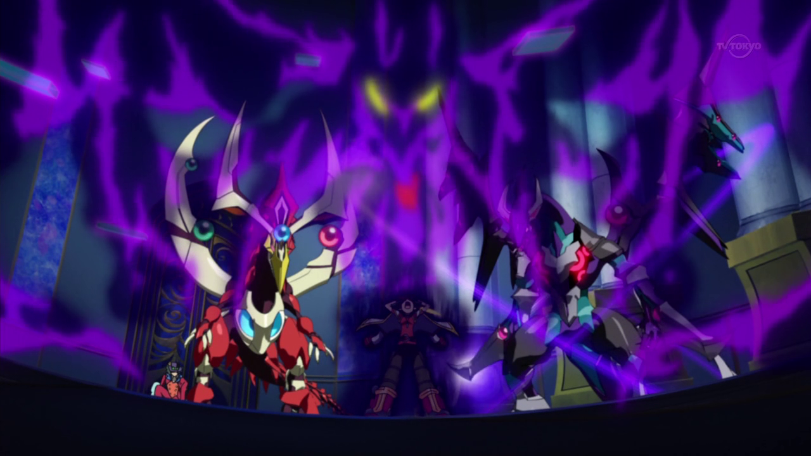
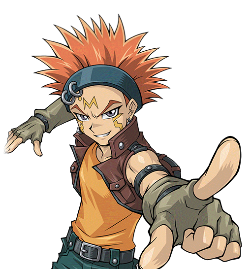
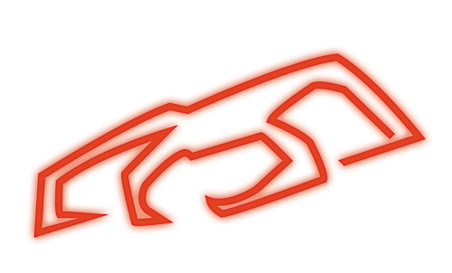
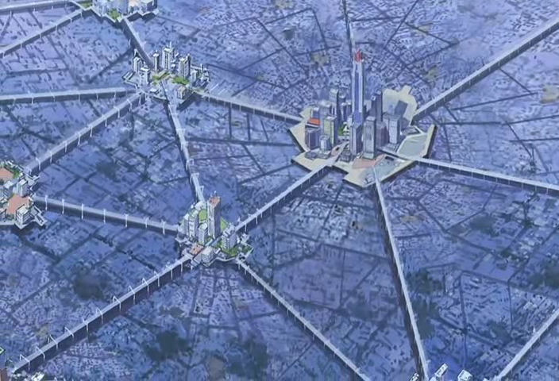
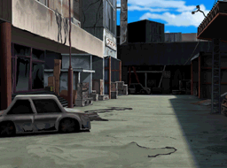
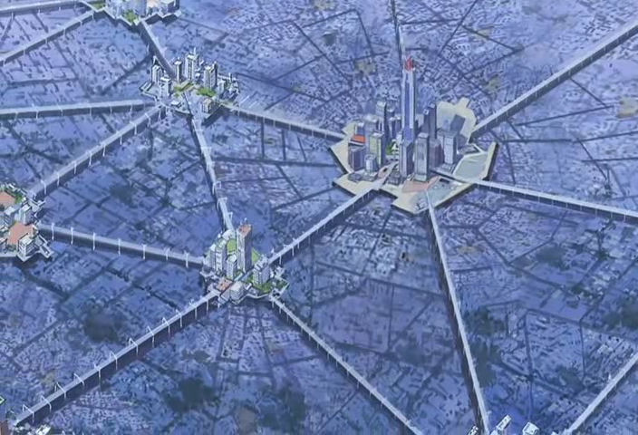
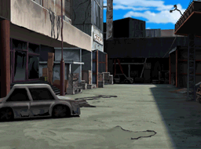
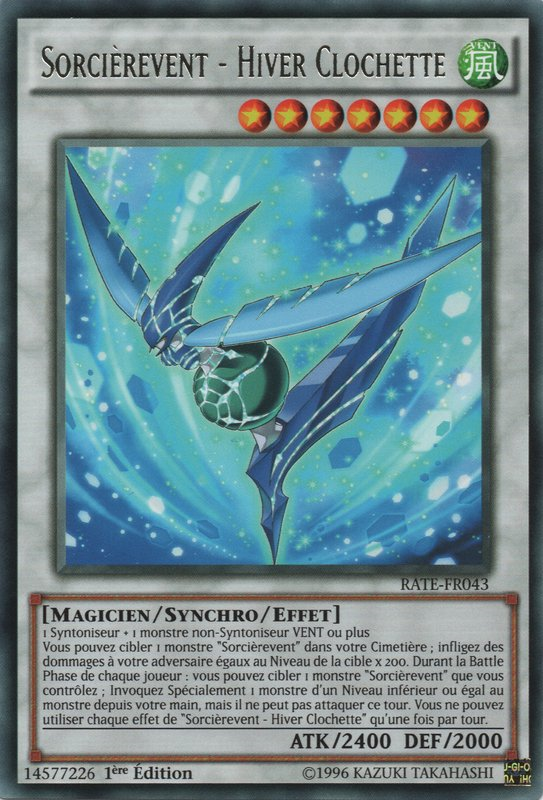
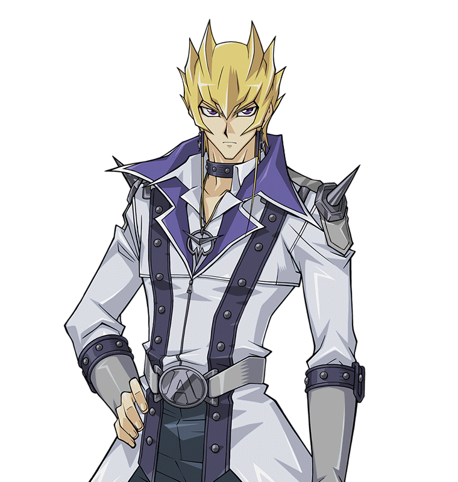

!
Sergey
!
Sergey va le tuer !
va le tuer !
S'écria Rin
 .
.
Rin: Non !
Yusei
!
Sergey
va le tuer !
S'écria Rin.
Yugo: En fait, d'après la façon dont ce bâtard a parlé, je pense qu'il prévoient tous les deux de tomber ! Mais ca ne se passera surement pas comme ça ! Pas
tant que je serais là pour l'empêcher de se produire. ACCROCHE-TOI À MOI RIN !
Yugo a prévenu en accélérant subitement pour rattraper Yusei et Sergey.
a prévenu en accélérant subitement pour rattraper Yusei et Sergey.
Rin: Yugo ! Qu'est-ce que tu fais !?
Rin cria, s'accrochant à lui pour avoir la vie sauve. Yugo ne répondit pas, essayant de concentrer toute son attention sur le sauvetage de leur nouvel ami.
Aussi dur qu'il aie essayé, Yusei ne pouvait pas se libérer. Il maudit d'avoir laissé cela se produire. Sergey continua son rire dément alors qu'ils s'approchaient du bord.
Sergey: OUI !! MAINTENANT CA VA ÊTRE MAGINIFIQUE !!!
Alors qu'ils étaient sur le point d'y passer, Yugo a foncé la D-Wheel de Sergey et le percuta, afin de povoir l'éloigner de Yusei. Cette collision a eu pour effet de faire s'envoler les trois véhicules du pont en même temps !
Pendant leur chute libre, Sergey s'est séparé d'eux, riant toujours dans sa chute. Yusei, voyant Yugo et Rin tomber à côté de lui, leur a tendu la main droite. Yugo a alors tendu la sienne. Au moment où Yusei a attrapé Yugo, plusieurs choses se sont produites en même temps.
D'abord, une marque rouge en forme de tete de Dragon a commencé à briller sur le bras droit de Yusei. Ensuite, les yeux de Yugo sont devenus verts
a commencé à briller sur le bras droit de Yusei. Ensuite, les yeux de Yugo sont devenus verts et il a commencé à hurler de douleur. Le bracelet de Rin s'est mis à briller d'un vert vif alors qu'elle continuait à s'accrocher à Yugo. Et enfin, tous les trois
ont été dévorés par un énorme dragon de couleur cramoisie
et il a commencé à hurler de douleur. Le bracelet de Rin s'est mis à briller d'un vert vif alors qu'elle continuait à s'accrocher à Yugo. Et enfin, tous les trois
ont été dévorés par un énorme dragon de couleur cramoisie venu du ciel... Et enfin,
ils étaient partis. Tout était de nouveau calme dans tout City. A l'intérieur de la créature géante, par contre, les choses ne pouvaient pas être plus intenses.
venu du ciel... Et enfin,
ils étaient partis. Tout était de nouveau calme dans tout City. A l'intérieur de la créature géante, par contre, les choses ne pouvaient pas être plus intenses.
Au sein de la bête, Yusei et les deux adolescents semblaient être dans un espace noir où passaient des étoiles scintillantes. Ils n'ont pas eu le temps de regarder, car l'un d'entre eux souffrait énormément. Yugo criait toujours terriblement, comme si on lui arrachait la vie. Il tenait une main sur son cœur pendant qu'il criait, tandis que l'autre était tenue fermement par Yusei. Les yeux de Yugo ont continué à briller en vert pendant ce temps. Il luttait également pour se libérer, mais Yusei le tenait fermement.
Alors qu'elle s'accrochait à son ami, Rin remarqua que le bracelet qu'elle portait
émettait également une lueur verte, mais d'un ton plus vif que les yeux de Yugo. Elle a également vu la marque rouge sur le bras de Yusei. Ces deux éléments, cependant,
n'étaient rien en comparaison de son inquiétude quant à l'état de Yugo.
qu'elle portait
émettait également une lueur verte, mais d'un ton plus vif que les yeux de Yugo. Elle a également vu la marque rouge sur le bras de Yusei. Ces deux éléments, cependant,
n'étaient rien en comparaison de son inquiétude quant à l'état de Yugo.
Rin: Yugo !? Est-ce que tu m'entends !? Yugo !!
Son ami ne semblait pas l'entendre car ses cris persistaient. Rin se tourna alors vers Yusei.
Rin: Yusei ! Où sommes nous ? Mais qu'est-ce qui ne va pas avec Yugo !?
Bien que surpris et confus au début, Yusei comprit rapidement leur situation. Voir sa marque et le bracelet de Rin s'illuminer après qu'ils soient entrés en contact avec Yugo lui a en quelque sorte indiqué ce qu'il fallait faire.
Yusei: Rin, écoute-moi ! Quoi qu'il arrive, ne relâche pas Yugo ! Nous devons tous les deux le garder jusqu'à ce que ce soit fini !
Rin: Jusqu'à ce que quoi soit fini !? Qu'est-ce que tu racontes !?
Rin cria, commençant à prendre un air en colère. Yusei resta calme alors qu'il tentait de la rassurer.
Yusei: Tu dois me faire confiance ! Je te promets que Yugo va s'en sortir ! Ne le lâche pas !
Il a donné des instructions. Bien qu'effrayée comme pas possible et extrêmement confuse, Rin fit ce qu'il disait et garda une prise ferme sur son ami. À ce moment-là,
Yugo était maintenant couvert par la lumière verte du bracelet de Rin. Peu après, Rin et Yusei ont entendu un rugissement venant d'en haut et ont levé les yeux. C'était
l'Akakiryu lui-même
(nDc: Akakiryū = Dragon Cramoisi en VF). Et il venait droit sur eux. Yusei vit que Rin était sur le point de couvrir Yugo, elle avait peur pour la vie de son ami.
lui-même
(nDc: Akakiryū = Dragon Cramoisi en VF). Et il venait droit sur eux. Yusei vit que Rin était sur le point de couvrir Yugo, elle avait peur pour la vie de son ami.
Yusei: Rin ! Ne bouge pas ! Laisse-le venir à Yugo !
Rin le regarda comme s'il venait de perdre la raison.
Rin: Tu es fou !? Cette chose va le tuer !
Cette dernière argumenta.
Yusei: Il ne lui fera pas de mal ! Fais-moi confiance !
Yusei répéta encore une fois à Rin de le croire. Même si elle n'aimait pas ça, elle recula comme il
le lui demandait. Alors qu'elle le faisait, l'Akakiryū les avait rejoints et avait attrapé Yugo avec ses griffes avant. Son cri s'intensifia alors que la créature
commençait à tirer quelque chose de Yugo. Les yeux de Rin s'élargirent de peur et elle sursauta en voyant une forme sombre être retirée de force du corps de Yugo.
Bientôt, cette obscurité pris l'apparence d'un
dragon sombre avec les mêmes yeux sombres et brillants que ceux de Yugo.
Rin: Mais qu'est-ce que c'est que ça !?
Elle disait, horrifiée par le spectacle qui s'offrait à elle.
Yusei: Ce dragon noir... ce doit être le fragment d'âme de
Zarc à l'intérieur de Yugo !
à l'intérieur de Yugo !
Yusei le devina.
Rin et lui regardèrent l'Akakiryū saisir fermement le dragon noir avec ses quatre griffes avant de le mordre violemment au cou. La bête noire et Yugo hurlèrent atrocement à cause de l'attaque. Alors que l'Akakiryū continuait à mordre, le corps du dragon noir commencait à se fissurer. Une lueur rouge sombre brillait à travers les fissures qui apparaissaient de la tête de la bête, jusqu'à sa queue féroce. Pendant ce temps, il luttait toujours pour se libérer, mais en vain. L'Akakiryū n'avait pas l'intention de libérer la créature malveillante.
Après un moment, le dragon sombre a émis un dernier rugissement provocateur, avant de se désintégrer dans une explosion de lumière rouge sombre. Alors que cela se produisait, Yugo cessa de crier et ses yeux redevinrent normaux avant de tomber inconscient sur les genoux de Rin.
Rin: Yugo !
Rin cria en le tenant fermement. Yusei était heureux et agréablement surpris que cela se soit produit. Une fois sa tâche accomplie, l'Akakiryū rugit de triomphe et toucha du bout de sa queue le bracelet de Rin, avant que cette dernière ne puisse faire quoi que ce soit. Ce dernier brilla encore plus fort, obscurcissant complètement tout ce qui se trouvait dans la zone, y compris Yusei, Rin, et Yugo...
Ce que Yusei vit par la suite, lui, les adolescents, et leurs deux D-Wheels étaient dans une place de la ville, en pleine nuit. Yusei reconnu l'endroit instantanément.

Il ne pouvait pas le croire, ils étaient arrivés dans son monde !
Yusei: Je suis de retour dans mon monde ! Nous avons réussi ! Mais comment ? Je pensais que nous avions besoin du
dirigeable d'Astral pour voyager entre les mondes ?
pour voyager entre les mondes ?
Il baissa les yeux vers la marque sur son bras droit, qui avait enfin cessé de briller. Il se souvint alors que l'Akakiryū avait touché le bracelet de Rin avant qu'il n'arrive ici.
Yusei: Se pourrait-il que...
Il se demanda doucement, juste après avoir entendu Rin parler à nouveau.
Rin: Yusei ? Que s'est-il passé ? Où sommes-nous ? Et Yugo ! Est-ce qu'il va bien ?
La fille a demandé frénétiquement. Yusei s'est alors approché et a examiné leur ami. Il était heureux de voir qu'il avait encore un battement de cœur et un pouls.
Yusei: Yugo va bien. Il a juste besoin de dormir maintenant.
Rin souria en regardant Yugo, rassuré que son ami d'enfance s'en soit sortit. Mais elle avait encore des questions, et elle ne mit pas longtemps à les poser.
Rin: Je suis contente que Yugo aille bien. Mais je suis toujours aussi confuse ! Où sommes-nous ? Comment sommes-nous arrivés ici ? Pourquoi mon bracelet s'est-il mis à brillé ? C'est quoi le problème avec cette marque sur ton bras ? C'était quoi ces dragons qu'on a vu tous les deux ! Enfin, que diable ont-ils fait à Yugo !?
Rin demanda rapidement sous le coup de la colère et de l'inquiétude. Elle s'est arrêtée pour reprendre son souffle. Yusei a compris sa frustration et son besoin de réponses.
Yusei: En fait, nous sommes arrivés chez moi. Cet immeuble est l'endroit où je vis.
Répondit Yusei en désignant un petit immeuble non loin de là où ils se trouvaient.
Yusei: Une fois que nous serons à l'intérieur, je te dirai tout ce qui vient de se passer.
Yusei lui promis. Rin hocha la tête, tandis qu'elle et Yusei commencèrent à transporter Yugo.
Yusei et Rin se sont retournés pour voir un jeune homme aux cheveux orange hérissés portant une veste sans manches et d'autres vêtements de motard. Il courait vers eux, l'air préoccupé.
Yusei:
Crow
!
Disait Yusei, heureux de voir son vieil ami.
Rin: Tu le connais ?
Demanda RIn, un peu épuisée.
Yusei: C'est bon. Crow Hogan est l'un de mes plus vieux amis. Nous avons grandi ensemble.
Yusei expliqua, tandis que Crow les rejoignit.
Crow: Hé, il était temps que tu reviennes, mon pote ! Je me demandais si tu préférais "ce" monde plutôt que le nôtre !
Yusei lui souria.
Yusei: Jamais.
Il lui répondit, alors ques les 2 amis riaient.
Rin n'avait aucune idée de ce que Crow voulait dire quand il parlait de "ce monde". Crow a finalement remarqué les deux nouveaux arrivants.
Crow: Laissez-moi deviner, Yugo et Rin ?
Demanda Crow. La fille acquiesca.
Rin: Je suis Rin, et voici Yugo. Il n'est pas blessé ou autre. Il est juste inconscient.
Rin repondit, expliquant pourquoi Yugo n'était pas réveillé.
Rin: C'est en quelque sorte une longue histoire.
Crow hocha la tête.
Crow: Heureux de savoir que vous allez bien tous les deux. Yusei m'a parlé de vous deux avant de partir. Je m'appelle Crow. Je suppose que je suis le premier à vous dire "Bienvenue dans notre monde !""
Il répondit en gloussant. Rin ne put s'empêcher de se joindre à lui, même si elle n'avait aucune idée de ce dont il parlait. Pourtant, il semblait être quelqu'un de bien, et Yusei avait dit qu'ils étaient amis.
Crow: Je peux vous donner un coup de main ?
Rin: Oui, s'il-te plaît.
Rin lui répondit, appréciant le geste. Crow a pris Yugo et l'a porté dans l'appartement, tandis que Yusei et Rin ont apporté leurs D-Wheels respectives dans le garage. Crow a emmené Yugo dans une chambre vide et l'a allongé sur le lit. Rin aimait l'apparence de l'endroit en regardant autour d'elle.
Crow: Yugo dort dans la chambre de notre troisième colocataire. Je suis sûr que ça ne le dérangera pas.
Disait Crow en revenant. Rin l'a remercié. Alors qu'elle et Yusei garaient leurs D-Wheel, elle remarqua une autre D-Wheel près de l'endroit où Yusei avait garé la sienne.
Rin: Est-ce que c'est ta D-Wheel, Crow ?
Crow souria.

Crow: Bien sûr que oui ! La Blackbird est ma fierté et ma joie !
L'adolescent plus âgé disait en regardant le véhicule de couleur noire qui semblait avoir des ailes repliées.
Rin: Blackbird ? Tu lui as donné un nom ?
Demanda Rin. Elle fut surprise de voir que Crow avait soudainement un air un peu sombre.
Crow: En fait, ce n'est pas moi. Il appartenait à l'origine à un vieil ami à moi,
Robert Pearson . Il est mort il y a quelque temps dans un grand incendie. J'ai essayé de le sauver, mais...
. Il est mort il y a quelque temps dans un grand incendie. J'ai essayé de le sauver, mais...
Il s'est arrêté de parler en baissant la tête et en fermant les yeux. Rin couvra sa bouche.
Rin: Je suis désolée. Je ne savais pas.
Rin s'est excusée, prenant un air triste. Crow a alors secoué la tête et lui répondit, un sourire de retour sur son visage.
Crow: Ah, ne t'inquiète pas pour ça. C'est de l'histoire ancienne. A présent, il me l'a confié à moi... ça, ainsi que d'autres choses par la même occasion.
Crow disait vaguement.
Crow: Quoi qu'il en soit, Yusei...
Disait Crow, attirant l'attention de ce dernier.
Crow: Tu n'avais pas dit qu'un vaisseau géant était censé vous déposer ici ? Parce que je n'ai pas vu de vaisseau, juste l'Akakiryū qui s'est envolé dans le ciel.
Rin: Vaisseau ? Akakiryū ?
Rin se demanda à elle même, ne sachant pas de quoi Crow parlait. Elle se souvint alors d'un des dragons qu'elle avait vu sur le chemin de la maison de Yusei. Celui qui était de couleur cramoisie et il a détruit le dragon de couleur sombre qui sortait de Yugo....
Yusei: Il y a eu un changement inattendu dans le plan.
Répondit Yusei. Avant qu'il ne puisse en dire plus, la porte d'entrée de leur appartement s'est ouverte.
Trois autres personnes sont venues se joindre au groupe. L'une était une grande jeune femme d'à peu près le même âge que Yusei, aux cheveux bordeaux foncé, dans une tenue presque gothique. Les deux autres étaient des jumeaux aux cheveux verts. Le premier, un garçon, avait les cheveux attaché queue de cheval. L'autre jumeau était une fille avec ses cheveux portés en deux nattes. Tous les trois semblaient heureux que Yusei soit de retour.
Rin: D'autres amis ?
Crow: Oh oui.
Crow lui répondit. Yusei fut alors serré dans ses bras par les petits jumeaux d'abord, puis par la jeune femme.
Yusei:
Aki ,
Rua
,
Rua ,
Ruka
,
Ruka .
Vous m'avez tous manqué.
.
Vous m'avez tous manqué.
Disait Yusei, à la fois heureux et surpris de voir ses autres amis.
Rua: Nous savions que tu étais revenu ! Nous l'avons tous senti ! A travers nos marques !
Rua, le jeune jumeau, disait avec enthousiasme en montrant une
marque en forme de coeur
sur son bras. Les deux filles ont ensuite montré leurs propres marques, chacune ressemblant à une griffe de dragon.
La marque de Aki
était beaucoup plus grande que
la marque de Ruka .
Rin se demanda ce que toutes ces marques signifiaient et comment elles leur permettaient de savoir que Yusei était revenu.
.
Rin se demanda ce que toutes ces marques signifiaient et comment elles leur permettaient de savoir que Yusei était revenu.
Ruka: Nous sommes venus ici dès que nous l'avons réalisé !
Répondit Ruka, la jumelle, avec un grand sourire.
Aki: Tu nous as manqué aussi, Yusei. Tu nous as manqué à tous...
Rin remarqua une sorte d'étincelle dans ses yeux au moment où elle le vit et Aki souria à Yusei. La jeune femme remarqua enfin Rin.
Aki: Qui est-ce ?
Les jumeaux ont également vu Rin, le jeune garçon, Rua, rougissant un peu en la voyant.
Yusei: C'est Rin, la fille dont je vous ai parlé. Rin, voici mes amis:
Izayoi Aki
,
Rua
et sa soeur
Ruka
.
Yusei les a présenté.
Rin: Bonjour.
Rin se présenta poliment en s'inclinant.
Rin: Enchanté de tous vous rencontrer.
Ruka: Bonjour Rin.
Rua: Bon-Bonjour.
Rua bégaya et semblait un peu maladroit. Rin pensait qu'il était un peu timide, mais ça ne semblait pas le déranger.
Aki: Bienvenue Rin.
Aki lui répondit. Elle a ensuite regardé autour d'elle mais n'a vu personne d'autre que Crow.
Aki: Attends, il n'y avait-il pas un garçon qui était censé être avec elle ?
Aki demanda à Yusei.
Yusei: Yugo ? Il est là aussi, mais il dort dans la chambre de Jack pour le moment. Il a traversé beaucoup de choses ce soir et nous devrions le laisser se reposer.
Ruka: Qu'est-ce que tu veux dire ? Que lui est-il arrivé ?
Rin: J'aimerais bien le savoir moi aussi.
Rin disait, semblant maintenant impatiente en plaçant ses mains sur ses hanches. Yusei s'est alors tourné vers elle.
Yusei: Rin, tu te souviens que j'ai dit à Yugo que lui et
Yuri partageaient une profonde connexion ?
partageaient une profonde connexion ?
Il a demandé, avec Rin hochant la tête pour lui répondre.
Yusei: Eh bien, cette connexion est liée à un mal puissant qui sommeille en eux deux.
Rin: Un mal ! Quel mal !? Tu veux dire ce dragon noir qui est sorti de l'intérieur de Yugo !?
Rin demandait, ayant peur pour son ami d'enfance.
Yusei: Je t'expliquerai plus en détail plus tard, mais oui. Il lui faisait du mal, mais l'autre créature que tu as vue,
l'
Akakiryu
, a extrait ce dragon noir de l'âme de Yugo et l'a désintégré. La vie de Yugo n'est plus en danger face à ce dragon sombre.
Yusei expliqua, en lui assurant que Yugo irait bien.
Rin: Comment a-t-il fait cela ? Et comment mon bracelet a-t-il été impliqué ?
Rin demanda, en montrant son bracelet.
Yusei: Ton bracelet avait aussi un lien avec ces ténèbres, mais d'un genre différent. Son pouvoir a aidé l'Akakiryū à détruire ce mal à l'intérieur de Yugo.
Yusei disait. Il s'est fait une note mentale de cet évènement lorsque lui et les autres protecteurs commenceront à se réunir prochainement.
Rin: Cet Akakiryū... qu'est ce qu'il est au juste ? Et qu'est-ce qu'il a à voir avec toutes ces marques que vous avez ?
Demanda Rin en désignant tout le monde.
Avec un signe de tête de Yusei, tout le monde montra ses marques à Rin.
La marque de Crow ressemblait à l'extrémité de la queue de l'Akakiryūi, la partie qui a touché le bracelet de Rin. Yusei lui a alors raconté l'histoire.
ressemblait à l'extrémité de la queue de l'Akakiryūi, la partie qui a touché le bracelet de Rin. Yusei lui a alors raconté l'histoire.
Yusei: Ce sont les marques de naissance du dragon conférés aux Signers (trad: Signers = Pactisants en VF). Tous les 5000 ans, une entité bienveillante connue sous le nom de l'Akakiryū choisissait certains individus pour leur donner son pouvoir, à travers ces marques. Ces Signers utilisaient leur pouvoirs pour sauver le monde d'une grande obscurité qui menaçait de le détruire. Mes amis et moi sommes les plus récents Signers à avoir été choisis. A l'origine, nous étions cinq...
Rua: Maintenant il y en a six ! Et tu es en train de regarder le plus récent !
Rua disait fièrement, montrant sa marque de manière à impressionner Rin. Cela faisait soupirer sa soeur jumelle d'agacement. Rin, quand à elle, semblait émerveillée
par cette histoire.
Rin: Cela semble incroyable. J'ai hâte de raconter tout ça à Yugo quand il se réveillera. Mais attendez...
Elle a ensuite compté tout le monde à, exceptée elle.
Rin: S'il y a six d'entre vous, alors où est le dernier ?
Crow: Il est hors de la ville pour un voyage d'entraînement.
Crow répondit.
Aki: Mais comme nous, il a dû sentir le retour de Yusei à travers sa marque lui aussi. Il sera probablement de retour demain, en fin d'après-midi au plus tôt s'il
est déjà en route.
Devina Aki.
Ruka: Peut-être que d'ici là, Yugo se sera réveillé. Je suis impatiente de le rencontrer.
Ruka disait avec impatience.
Yusei a souri aussi. Il avait hâte de voir Rin et Yugo rencontrer "ce" Signer quand il se présentera.
Rin: Je pense que vous allez tous l'aimer. Il est peut être un peu brut et embêtant, mais c'est une bonne personne en général.
Disait Rin en riant. Ce qui fit rire les autres personnes présentes.
Rin: Au fait, qui est le Signer qui n'est pas là ?
Demanda cette dernière.
Rua: Oh, il est...
Rua a commencé à répondre, mais s'est arrêté lorsqu'il a entendu une toux de sa sœur, qui lui a également lancé un regard qui disait "Ne lui dis pas". Il s'est alors souvenu qu'il n'était pas censé dire quoi que ce soit aux nouveaux arrivants à propos de "lui" avant son retour. Rin ne semble pas avoir remarqué cette subtilité.
Rua: C'est quelqu'un qui, je pense, vous plaira à toi et à Yugo.
Il dit rapidement avant de se tourner vers Yusei.
Rua: Alors Yusei, parle-nous de ce monde où tu es allé ! Que s'est-il passé là-bas ?
Rua demanda, plus qu'impatient d'entendre l'histoire de comment Yusei a trouvé Yugo et Rin et comment il les a aidé à échapper à l'emprise de
Akaba Leo .
Yusei a raconté toute l'histoire, de comment il a surveiller le couple Synchro de l'assaut de Yuri, et enfin l'incident avec Sergey sur le pont. Tout le monde a sursauté en
entendant Yusei dire qu'ils étaient tous tombés.
.
Yusei a raconté toute l'histoire, de comment il a surveiller le couple Synchro de l'assaut de Yuri, et enfin l'incident avec Sergey sur le pont. Tout le monde a sursauté en
entendant Yusei dire qu'ils étaient tous tombés.
Crow: Cet enfoiré de psychopathe ! Je ne peux pas croire qu'il ait essayé de te tuer !
S'exclama Crow, en colère.
Ruka: Je suis heureux que l'Akakiryū vous ait tous sauvés. Mais comment a-t-il fait pour vous ramener ici sans le vaisseau d'
Astral ?
?
Ruka demanda.
Rin: Astral ?
Yusei: C'est un ami d'un autre monde.
Yusei répondit à Rin, avant de s'adresser aux autres.
Yusei: Mon plan initial prévoyait que nous sortions tous les trois de City, juste assez loin pour que je puisse contacter Astral avec mon Duel Disk pour qu'il vienne nous chercher et nous ramène ici. L'intervention de Sergey a tout changé. Quant à la façon dont nous sommes revenus, je pense que lorsque l'Akakiryū a touché le bracelet de Rin avec sa queue, il a acquis la capacité de voyager dans mon monde.
Aki: Incroyable. Je savais que l'Akakiryū pouvait voyager dans le temps, mais je ne savais pas qu'il pouvait emprunter d'autres pouvoirs pour les utiliser
comme s'il s'agissait du sien.
Aki disait avec admiration.
Rin: Voyager dans le temps ? Et pourquoi vous continuez à parler d'autres mondes ?
Demanda Rin, confuse.
Yusei: Je laisse cette explication pour demain. Pour l'instant, je dois donner à Astral et à son ami
Yuma un message disant que je suis revenu ici en toute sécurité avec toi et Yugo.
un message disant que je suis revenu ici en toute sécurité avec toi et Yugo.
Disait Yusei.
Alors qu'il détachait son Duel Disk de sa D-Wheel et commençait à taper son message, Rin lui posa une dernière question à laquelle elle devait avoir une réponse.
Rin: Yusei, tu ne m'as toujours pas dit pourquoi ce type, Akaba Leo, a essayé de me faire kidnapper. Que veut-il de moi ?
Demande Rin. Crow et les autres avaient l'air d'appréhender face à cette question. Yusei s'arrêta de taper et jeta un regard dur à l'adolescente.
Yusei: Il y a des années, il a perdu sa fille unique. Il a mis au point un plan pour la ressusciter, et tu en fais partie. Cependant, le processus pour la faire
revivre... te tuerait. Je ne pouvais pas permettre cela.
Yusei a répondu, avant de reprendre la rédaction de son message. Rin était horrifiée par cette révélation.
Rin: Me tuer !? Sérieusement !? Je pensais qu'il n'était qu'un pervers dérangé qui avait un faible pour les adolescentes ! Mais ça !? Pourquoi m'aurait-il choisie !?
Rin ne pouvait pas comprendre pourquoi elle avait été choisie pour les plans fous de Akaba Leo. Elle soupçonnait Yusei d'en savoir plus qu'il ne l'avait dit à elle et à Yugo, mais honnêtement, elle ne voulait pas en apprendre plus pour le moment... pas après ça. Après un moment, Rin se calma, sachant qu'elle allait bien grâce à Yusei. Elle a ensuite essayé d'étouffer un bâillement. Crow, cependant, l'a remarqué.
Crow: Très bien, c'est l'heure de te coucher. D'après ce que nous avons entendu, toi et ton petit copain avez passé une nuit infernale. Vous avez tous les deux besoin
d'une bonne nuit de sommeil.
Rin est devenue toute rouge face à la remarque de Crow.
Rin: Petit copain !? Tu veux dire Yugo !? Pas possible ! Ce n'est PAS mon petit copain ! Nous sommes plus comme un frère et une sœur ! On a grandi ensemble dans un orphelinat !
Il n'y a RIEN entre nous, d'accord !?
Rin s'exclama, semblant légèrement embarrassée. Crow se contenta de ricaner.
Crow: Si tu le dis. Maintenant, on va te trouver un pyjama et un endroit où dormir.
Il disait, souriant toujours de la réaction de Rin. L'entendre s'emporter contre Yugo a rendu Rua plus optimiste quant à ses chances avec elle. C'était, jusqu'à ce que
Ruka le tire hors de portée de voix.
Rua: Quoi ? Qu'est-ce qu'il y a, Ruka ?
Rua a demandé, perplexe d'être éloigné comme ça.
Ruka: Rua, écoute-moi une seconde. Ne te fais pas d'idées sur Rin. Elle est trop agée pour toi. De plus, d'après ce que nous venons d'entendre, Yugo te ressemble
beaucoup... et elle le voit comme un frère dont elle doit s'occuper. Tu n'as pas l'étoffe d'un petit ami pour elle.
Comme Rin, son frère aîné est également devenu rouge sur et a commencé à réagir de manière excessive.
Rua: Je... je ne sais pas de quoi tu parles ! Je n'ai jamais dit que je voulais être son petit ami !
Il chuchota frénétiquement, de sorte que Rin ne puisse pas l'entendre. Ruka croisa les bras, ne croyant pas un mot de tout ça.
Ruka: Oh allez, c'est tellement évident. La façon dont tu la regardais et dont tu essayais de l'impressionner tout à l'heure. Tu as un sérieux béguin pour Rin.
Nous sommes jumeaux, rappelle-toi, et je te connais. Tu ne peux pas me cacher quelque chose comme ça.
A rétorqué Ruka. Rua grogna et s'est détournée, toujours dans le déni.
Rua: Tu as tout faux !
Il le disait, avant de s'éloigner pour faire semblant d'examiner la D-Wheel de Yugo, non sans jeter un ou deux regards furtifs à Rin en chemin. Ruka secoua la tête et
soupira.
Aki: Rua a son premier béguin, n'est-ce pas ?
Aki a demandé en s'approchant de Ruka.
Ruka: On dirait bien. Il sait que le séjour de Rin et Yugo n'est que temporaire. Il va juste être blessé à la fin.
Ruka disait, inquiète pour les sentiments de son frère. Aki a simplement souri.
Aki: On n'y peut rien Ruka. Rin est une jolie fille mignonne. Un jour, tu vas commencer à craquer pour un garçon toi aussi.
Ruka: Aucune chance.
Ruka disait, d'un air désintéréssée, ce qui fit ricaner Aki.
Cette nuit-là, après le départ d'Aki et des jumeaux, Rin dormit sur un sac de couchage, dans la chambre où Yugo dormait. Elle a insisté sur le fait qu'elle voulait être là quand il se réveillerait le lendemain matin. Cependant, à l'aube du nouveau jour, Yugo dormait toujours. Même l'odeur d'un petit déjeuner chaud n'a pas fait bouger le garçon. Rin soupira, cela fonctionnait habituellement lorsque Yugo se couchait tard.
Rin: Avoir eu cette chose arrachée lui a dû prendre beaucoup plus d'énergie que je ne le pensais
Rin disait, commençant maintenant à s'inquiéter pour lui.
Crow: Ne t'inquiète pas trop. Yugo se réveillera quand il le pourra. En attendant, qui veut des oeufs et des toasts ?
Crow a demandé en servant le petit déjeuner. Aki, Rua, et Ruka l'avaient rejoint, ainsi que Yusei et Rin, pendant qu'il cuisinait. Ils étaient sur le point de manger quand quelqu'un a répondu à l'annonce de Crow.
Yugo: Je prendrais, pour sûr !
Cria une nouvelle voix venant de près du garage. Rin et les Signers se retournèrent pour voir Yugo, enfin réveillé.
Yugo: Oh, bonjour Rin ! Content que tu ailles bien !
Yugo disait joyeusement.
Rin: Yugo ! Comment te sens-tu ?
Rin demanda en se levant de sa chaise et en le serrant dans ses bras, heureuse qu'il soit de nouveau sur pied.
Yugo: Mon corps me fait encore un peu mal et je suis affamé. Mais à part ça, je suis en pleine forme !
Il le disait avec un sourire. Rin a alors soudainement froncé les sourcils.
Rin: Bien.
Elle a dit... juste avant de lui donner un coup dans le ventre.
Tout le monde a été choqué de voir Yugo tomber à genoux, les mains sur l'estomac et le souffle coupé. Personne n'a dit un mot pendant qu'ils regardaient.
Yugo: Rin !? Qu'... Qu'est-ce... que !?
Yugo respirait à peine alors qu'il cherchait de l'air. Rin avait maintenant l'air furieuse, comme une mère punissant son enfant pour avoir fait quelque chose de mal.
Rin: Espèce d'idiot ! Tu as bien failli nous faire tuer avec cette cascade que tu as faite sur le pont ! C'était de loin la chose la plus stupide que tu aies jamais faite !
Disait Rin avec colère. Yugo commença à se remettre en se redressant.
Yugo: Rin, j'essayais... de sauver Yusei !
Raisonna ce dernier.
Rin: En faisant cela, tu nous as tous envoyés en chute libre vers la mort ! Nous avons eu de la chance de survivre à ça !
Yugo: Je devais faire quelque chose ! Qu'est-ce que j'étais censé faire, laisser Sergey le tuer !?
Argumenta Yugo.
Rin: Bien sûr que non ! Mais quand même... !
Rua: Euh, Rin ? Tu ne penses pas qu'il en a eu assez ? Vous vous êtes tous sortis de ce pétrin en vie, n'est-ce pas ?
Rua essaya de la raisonner.
Rin: Reste en dehors de ça Rua ! C'est entre moi et Yugo !
Rin lui a répondu. Rua se détourna rapidement et fixa son assiette vide. Il a soudainement pensé que Rin n'était plus aussi mignonne.
Yusei: Rin, ça suffit.
Yusei a dit fermement.
Yusei: Yugo a fait ce qu'il pensait devoir faire pour me sauver. C'était peut-être imprudent, mais c'est du passé maintenant. S'il te plaît, laisse tomber et passe
à autre chose.
À ses mots, Rin s'est finalement calmée et a regardé Yugo.
Rin: Yugo, je suis désolé de t'avoir frappé. Yusei a raison. Oublions ça et mangeons quelque chose.
Cela lui a immédiatement remonté le moral.
Yugo: Oh oui ! C'est l'heure de manger !
Yugo le disait avec plaisir en prenant place à la table avec Rin.
Après l'avoir présenté à tout le monde, Rin informa Yugo de ce qu'il avait manqué et de ce qu'elle avait elle-même appris sur lui, Yusei et ses amis. Elle n'a, cependant, pas partagé les détails de la raison pour laquelle Akaba Leo était après elle. Lorsque Yugo l'a remarqué et a demandé, elle lui a simplement dit qu'elle ne se sentait pas encore prête à lui dire. Voyant que Rin ne voulait vraiment pas en parler, il a laissé tomber le sujet pour l'instant. Bien qu'initialement effrayé par la présence d'un dragon maléfique en lui, il fut très soulagé d'apprendre que Yusei s'en était débarrassé avec l'aide de Rin et de l'Akakiryū. Il était impressionné par chaque détail.
Yugo: Bordel de... ! Tout ça a l'air plus qu'impressionnant !
Il s'est ensuite tourné vers Yusei.
Yugo: Merci d'avoir sauvé nos fesses hier soir, Yusei !
Ce dernier secoua la tête.
Yusei: C'est l'Akakiryū qui nous a sauvés de cette chute, et toi des ténèbres qui t'attaquaient. Je n'ai pas fait grand chose.
Il le dit modestement.
Yugo: Hé mec, ne te sous-estime pas ! Tu nous as quand même aidé à nous sauver nous, même si c'est l'Akakiryū qui a fait le plus gros du travail !
Aki: Ne fais pas attention à Yusei. Il est très modeste.
Répondit Aki.
Alors que le ceouple Synchro apprenait à connaître tout le monde, une personne à la table a à peine dit un mot. Yugo l'a remarqué quand il a vu Rua manger lentement son toast.
Yugo: Hey Rua ? Tu n'as pas l'air bien. Qu'est-ce qu'il y a ?
Rua n'a pas levé les yeux.
Rua: Rien.
Il le dit doucement. Ruka savait ce que ça devait être.
Ruka: Je ne pense pas qu'il aie aimé se faire crier dessus par son premier amour.
Ruka a dit sans gène, ce qui a surpris Yugo et Rin. Rua s'est tourné vers sa sœur, paniqué.
Rua: Ruka ! Laisse-moi tranquille ! Je n'ai rien dit de tel !
Il cria, le visage tout rouge et transpirant d'embarras. Il se leva instantanément de son siège et se dirigea vers la D-Wheel de Yusei, s'y appuyant, à dos retournée contre tous. Pendant tout ce temps, il évitait toujours le contact visuel avec ledit "amour". À la surprise de Rua, Yugo ria.
Yugo: Oh, ne t'en fais pas. Rin me crie dessus souvent ! Elle s'inquiète juste trop ! Tu t'y habitueras.
Cela n'aida pas vraiment le jeune garçon, qui regardait toujours ailleurs. Voyant cela, Rin se leva et se dirigea vers lui.
Rin: Rua ?
Elle disait timidement, en se tenant à côté de lui, attirant son attention. Il ne la regardait toujours pas. Elle soupira avant de continuer.
Rin: Je suis désolée. Je n'aurais pas dû m'emporter contre toi. J'étais vraiment en colère contre Yugo et j'ai déversé une partie de ma colère sur toi. C'était
mal de ma part, et tu ne le méritais pas. Peux-tu s'il te plaît me regarder dans les yeux et me pardonner ?
Elle a demandé gentiment. A contrecoeur, Rua s'est lentement retourné et a fait face à Rin. Il semblait incertain.
Rua: Tu le penses vraiment ?
Il a demandé, semblant toujours un peu blessé. Rin lui souria et l'a serré dans ses bras.
Rin: Bien sûr que je le pense. Et aussi, je suis flattée que tu aies eu un coup de coeur pour moi.
Elle dit doucement. Rua rougit avant de détourner à nouveau le regard.
Rua: C'est Ruka qui a dit ça, pas moi. Mais oui..., je te pardonne.
Rua marmonna, faisant rire Rin.
Rin: Merci. De plus, ce n'est pas parce que ce n'est pas toit qui l'aie dit que ce n'est pas vrai.
Elle chuchota avant de retourner à table.
Yugo: Alors, tout va bien entre vous deux ?
Demanda Yugo.
Rin: Oui, tout va bien entre nous.
Rin répondit alors que Rua revenait également, semblant un peu plus joyeux.

Après le petit-déjeuner, Yusei a décidé de faire visiter la ville de Néo Domino City à Yugo et à Rin, les jumeaux les accompagnant. Aki est partie parce qu'elle avait des plans avec ses parents, tandis que Crow est resté derrière pour s'occuper de l'endroit.
Sur leurs D-Wheels, Yusei mène le groupe avec lui en tête, Yugo et Rin à sa gauche et les jumeaux à droite. Le couple Synchro a été surpris de voir les D-Boards que les enfants pilotaient.


Rin: Ils sont tellement cool ! Comme ça, les enfants peuvent auusi faire des Ridings Duels sans D-Wheels ! J'aurais aimée que nous en ayons là d'où nous venons !
Commenta cette dernière.
Ruka: Le truc..., c'est que nous sommes les seuls à en posséder pour le moment.
Disait Ruka.
Rua: Yusei a fabriqué le mien, et Ruka a obtenu le sien de... quelqu'un d'autre.
Rua a dit, n'étant pas à l'aise de mentionner le nom de la personne qui a donné à Ruka sa planche. Rin n'a pas insisté sur la question, car elle était plus intéressée par les similitudes et les différences entre le monde d'où elle et Yugo venaient, et le monde dans lequel ils sont maintenant.
Rin: Donc, au petit déjeuner, tu as dit que Yugo et moi avons quitté notre monde et avons voyagé dans ton monde ? Un monde totalement différent du nôtre ?
Rin demanda avec curiosité.
Yusei: En effet. Nos mondes sont éloignés l'un de l'autre. Une barrière les sépare. Le vaisseau que nous étions censés utiliser pouvait contourner cette
barrière sans poser de problèmes. Croyez-le ou non, la façon dont les choses étaient dirigés dans votre monde était pratiquement pareil que dans notre monde avant.
Yusei leur expliqua.
Yugo: Vraiment ? Nos mondes étaient-ils les mêmes d'une certaine manière ?
Demanda Yugo. Yusei repensa à la façon dont tout a commencé dans sa vie.
Yusei: Il y a de nombreuses années, quand j'étais très jeune, une catastrophe appelée
Zero Reverse a détruit une grande partie de cette ville. Elle a été divisée entre
Neo Domino City
, où vivaient les gens les plus riches, et un district nommé
Satellite
, où j'ai grandi avec Crow et d'autres orphelins. Les habitants de Satellite étaient traités de la même façon que les Commons de votre monde. Nous avions peu de
ressources, et les conditions de vie étaient pitoyables. On pouvait dire qu'on avait l'impression de vivre dans un immense dépôt de ferraille, ce qui correspondait
vraiment à l'aspect de l'endroit d'autrefois.
a détruit une grande partie de cette ville. Elle a été divisée entre
Neo Domino City
, où vivaient les gens les plus riches, et un district nommé
Satellite
, où j'ai grandi avec Crow et d'autres orphelins. Les habitants de Satellite étaient traités de la même façon que les Commons de votre monde. Nous avions peu de
ressources, et les conditions de vie étaient pitoyables. On pouvait dire qu'on avait l'impression de vivre dans un immense dépôt de ferraille, ce qui correspondait
vraiment à l'aspect de l'endroit d'autrefois.
Yugo et Rin se sentaient tristes que leur nouvel ami aie grandi dans un tel environnement et aie été traité aussi horriblement qu'eux.
Rin: Mon Dieu, Yusei. Cela semble être pire que la façon dont nous avons vécu, nous.
Rin répondit avec sympathie.
Yugo: Bon sang. Mais de toute évidence, vous ne vivez plus du tout de cette façon. Qu'est-ce qui a tout changé ?
Demanda le jeunr Rider.
Yusei désigna alors un pont massif qui s'étendait sur l'eau.

Yusei: Vous voyez cela ? C'est le Daedalus Bridge (Daedalus Bridge = Pont Daedalus en VF). La construction a commencé des années après l'incident du Zero Reverse
par un homme très particulier. À travers le temps et divers obstacles, le pont a finalement été achevé, permettant aux deux endroits de ne faire qu'un une fois de
plus. Après cela, la vie a changé pour tout le monde. Aujourd'hui, tout le monde est traité de manière plus égale et il n'y a presque plus de discrimination.
Nous sommes tous devenus unis par l'esprit et le cœur.
Yusei leur expliqua, reconnaissant de les changements positifs pour l'endroit qu'il appelait sa maison.
Yugo: C'est une histoire incroyable Yusei !
Yugo disait, vraiment touché par l'histoire. Rin a même eu une larme à l'oeil.
Rin: Je souhaite que nous aussi, nous puissions changer les choses dans notre monde.
Yusei: Peut-être qu'un jour, vous y arriverez.
Disait Yusei les encourageants.
Yugo et Rin espéraient également qu'ils pourraient faire de leur monde un endroit aussi meilleur que celui de Yusei. Ils ont ensuite discuté de l'endroit où le duo allait rester pendant leur séjour dans ce monde.
Yugo: Peut-être que nous pouvons dormir chez toi ?
Suggéra Yugo.
Yusei: J'aimerais que vous puissiez, malheureusement, nous n'avons pas vraiment la place pour cinq personnes. Quand notre autre ami reviendra, vous n'aurez pas
d'endroit où dormir.
Répondit Yusei avec regret.
Ruka: Que diriez-vous si vous séjourniez chez nous ?
Ruka leur demanda.
Rin: Où est-ce que vous vivez ?
Rin interrogea la plus jeune des jumeaux.

Peu de temps après, ils sont arrivés au penthouse de Rua et Ruka, au sommet d'un bâtiment donnant sur la ville. Yugo et Rin ont été impressionnés par leurs quartiers, et ont été tout simplement stupéfaits quand ils sont sortis sur un grand espace ouvert avec une grande piscine. La vue était spectaculaire.
Yugo: Wow ! Vous deux, vous vivez ici !? Et vous avez même une piscine !? Je suis trop jaloux ! Dans notre monde, seuls ceux qui sont des Tops peuvent vivre dans un
endroit comme ça !
Yugo a déclaré.
Rin: Vous pouvez tout voir d'ici ! Vous êtes si chanceux tous les deux !
Rin a ajouté.
Rin: Dites, où sont vos parents ?
Elle demanda aux jumeaux.
Ruka: Ils sont occupés à travailler. Il n'y a pratiquement que nous deux.
Ruka a expliqué.
Yugo: Vraiment ? Vous êtes tous les deux seuls la plupart de la journée jusqu'à ce qu'ils rentrent à la maison ?
Yugo demanda, un peu surpris par cela.
Rua: Oui, mais ce n'est pas grave. Nous traînons toujours avec nos amis quand nous ne sommes pas à l'école.
Rua disait pour se défendre.
Yusei: Ca sonne comme si tu avais besoin d'un peu plus de compagnie.
Yusei disait en regardant Yugo et Rin.
Rua: Ouais ! Vous voulez rester ici jusqu'à ce que vous puissiez rentrer chez vous en toute sécurité ?
Supplia le jeune garçon.
Ruka: Ça ne nous dérangerait vraiment pas.
Sa soeur jumelle insista.
Rin: Et bien, pensez-vous que vos parents seront d'accord ?
Rin demanda avec hésitation.
Rua: Oh bien sûr ! Ce sont des gens bien ! Nous leur dirons simplement que vous êtes des cousins de Yusei qui, euh... ont perdu leur maison dans une sorte d'accident
et ont voyagé ici ! Nous pouvons les convaincre de vous laisser rester avec nous jusqu'à ce que vous vous remettiez sur pied !
Expliqua Rua.
Yugo: En fait, cela semble assez convaincant. Ça ne me dérangerait pas de rester ici ! Et toi Rin ?
Demanda Yugo.
Rin semblait toujours incertaine. Elle se tourna vers Yusei, qui était également d'accord avec l'idée. Elle ne voulait pas s'immiscer dans la maison de leurs nouveaux amis. Bien qu'elle admettait qu'il serait agréable de rester dans un endroit qui permet de regarder la ville d'en haut plutôt que d'en bas. Avant qu'elle ne puisse répondre...
Rua: Et si nous décidions par un duel Rin ? Si je gagne, toi et Yugo pouvez rester ici avec moi et Ruka. Si tu gagnes, nous allons trouver un autre endroit pour vous.
Qu'est-ce que tu en penses ?
Rua défia Rin. Rin sourit et hocha la tête. C'était peut-être ce dont elle avait besoin pour ce décider.
Rin: J'aime cette idée. Le truc c'est que... je n'ai pas de Disque de Duel.
Elle disait, d'un air embarrassé.
Rua: Tu n'en as pas ?
Rua a demandé avec surprise.
Ruka: Tiens Rin, tu peux emprunter le mien.
Dit Ruka en donnant son Disque de Duel à la fille plus âgée.
Rin: Merci Ruka.
Les deux duellistes, ayant maintenant tous ceux dont ils avaient besoin, n'ont pas perdu de temps pour commencer.
Rin: Es-tu prête Rua ? Je n'ai pas l'intention d'y aller doucement avec toi !
Rin prévenait Rua, tout en allumant son Disque de Duel.
Rua: Je peux tout supporter ! Allons-y !
Rua répondit, son propre Disque de Duel allumé aussi.
Yugo: Fais attention Rua ! Rin est impitoyable quand elle fait des duels !
Yugo le prévenait. Lui, Yusei, et Ruka ont ensuite regardé l'action se dérouler.
Rua: Si ça ne te dérange pas, je vais commencer en premier !
Déclara Rua.
Rin: Bien sûr, vas-y.
Rin lui répondit, voulant donner une chance a l'enfant, avant de s'en prendre durement à lui.
Rua: Merci. C'est mon tour ! Draw !
Turn 1: (Rua: 4000 LP / Main: 6)(Rin: 4000 LP / Main: 5)
Ayant appris que le premier joueur pouvait piocher dès son premier tour dans ce monde, Rin n'était pas surprise. Après avoir entendu l'avertissement de Yugo, Rua voulait être préparée à ce que Rin pourrait lui réserver.
Rua: C'est parti ! D'abord, j'invoque le monstre Tuner,
“Deformer Lighton ”
!
Le Tuner de Rua ressemblait à un robot bleu avec une grosse lumière dans sa poitrine.
Rua: Je pose une carte face cachée et je termine mon tour.

Turn 2: (Rua: 4000 LP / Main: 4)(Rin: 4000 LP / Main: 6)
Rin allait tenir sa promesse sur son intention de "ne pas y aller doucement" avec lui.
Rin: Moi aussi j'invoque un monstre Tuner:
“Windwitch Glass Bell ”
!
Le Tuner de Rin était une jolie sorcière aux cheveux verts et aux vêtements bleus et roses chevauchant un balai en verre avec une cloche colorée à la place des
brindilles sur le balai.
Rin: J'active l'effet de
“Glass Bell ”
. Lorsque
“Glass Bell ”
est Invoquée Normalement ou Spécialement, je peux prendre un monstre "Windwitch" de mon Deck et l'ajouter à ma main. Depuis mon deck, j'ajoute ce monstre:
“Windwitch Ice Bell ”
. Maintenant, je joue une carte magie:
“Kaze wo Tsugeru Suzu no Ne ”
! Cette carte me permet, en révélant un monstre "Windwitch" de ma main, de pouvoir invoquer spécialement une copie du monstre révélé depuis mon deck sur mon terrain !
Rin: Il n'y a qu'un seul monstre qu'elle pouvait et qu'elle voulait choisir. Je me sens déjà mal pour Rua...
Yugo murmura alors que Rin continua à jouer.
Rin: Je révèle
“Ice Bell ”
que je viens d'ajouter et je fais l'invocation spéciale d'une copie de celle-ci depuis mon deck !
Le nouveau monstre de Rin ressemblait à son Tuner, mais avec de longs cheveux bleus et violets.

Rin: J'active l'effet de
“Ice Bell ”
! Durant le tour où ce monstre est invoqué normalement ou spécialement, je peux infliger 500 points de dommages à l'adversaire !
“Ice Bell ”
a pointé sa baguette vers Rua, dans l'intention de l'endommager avec un jet de vent glacial.
Rua: Ça ne marchera pas ! J'active l'effet de monstre de “Lighton ” ! Tant qu'il est en mode attaque, tous les dommages par effet qui me sont infligés sont redirigés vers toi !
Rua révéla alors que son Tuner utilisait un flash lumineux pour refléter le souffle de “Ice Bell ”.
Rin: Quoi !?
Rin fut touchée par les dégâts destinés à son adversaire.
Rin: Kuhh !
(Rin: 4000 LP - 500 LP = 3500 LP)
Ruka: C'était un bon mouvement de la part Rua.
Ruka commenta.
Yugo: Pas mal. Habituellement, c'est Rin qui inflige des dégâts en premier. Cela fait partie de son style. Je ne pensais pas que Rua avait un moyen de la contrer dès le début comme ça.
Yugo disait, en ayant l'air impressionné.
Rin: Rin n'a jamais fait de duel contre un Signer.
Disait Yusei. Alors qu'il ne doutait pas que Rin serait une adversaire difficile, il était également confiant que Rua serait capable de se défendre contre elle.
Rin: Donc son Monstre le protège de tous dommages d'effets lorsqu'il est en mode Attaque. C'est assez embêtant. Heureusement pour moi, ce monstre à une faible puissance d'attaque.
Pensa Rin, sachant ce qu'elle devait faire ensuite.
Rin: Pas mal Rua. Mais ne soit pas si arrogant ! Je syntonise
“Ice Bell ”
de niveau 3 avec
“Glass Bell ”
de niveau 4.
Vents de l'hiver ! Rassemble le pouvoir de la neige et de la glace et souffle sur le terrain ! Synchro Shōkan ! Montre-toi ! Niveau 7,
“Windwitch Winter Bell ”
!
Le meilleur monstre de Rin prit l'apparence d'une sorcière à l'armure bleue et verte, et aux ailes bleu clair.

Rin: Battle ! “Windwitch Winter Bell ” attaque “Deformer Lighton ” ! Blizzard Gust !
Rua: Piège activé ! “Deform ” ! Lorsqu'un monstre "Deformer" est la cible d'une attaque, je peux non seulement annuler l'attaque, mais aussi changer sa position de combat ! “Lighton ” passe maintenant en mode défense !
Rin maugréa dans son souffle lorsqu'elle vit l'attaque de son monstre échouer également.
Rin: Tu es meilleure que je ne le pensais, Rua ! Mais je suis loin de jeter l'éponge ! Je pose trois cartes face cachée et je termine mon tour !

Rin complimenta le jeune garçon, qui rougit de ses louanges.
Rua: Je ne m'attends pas à ce que tu le fasses ! C'est mon tour ! Draw !
Turn 3: (Rua: 4000 LP / Main: 5)(Rin: 3500 LP / Main: 2)
Rua espérait que ce prochain mouvement lui permettrait de gagner.
Rua: Je remets
“Lighton ”
en mode Attaque, puis j'invoque un autre monstre Tuner,
“Deformer Scopen ”
!
Un monstre ressemblant à un microscope noir sous forme de robot se tenait maintenant à côté de son compagnon Tuner.
Rin: Pourquoi Rua invoquerait-il deux Tuners ?
Se demanda Rin.
Rin: Habituellement un seul Tuner est nécessaire pour une Invocation Synchro, alors pourquoi il veut posséder plus qu'un seul ?
Elle pensait que Rua avait peut-être encore besoin des effets de “Lighton ” pour protéger ses points de vie.
Rua: Maintenant, j'active l'effet de
“Scopen ”
!
Une fois par tour, lorsqu'il est en mode Attaque, je peux faire l'Invocation Spéciale d'un "Deformer" de niveau 4 depuis ma main, mais ce "Deformer" sera détruit
durant la End Phase.
J'invoque spécialement
“Deformer Videon ”
!
Le troisième Monstre de Rua ressemblait à un robot en forme de caméra vidéo noire et grise.
Rua: A présent, je syntonise
“Videon ”
de niveau 4 avec
“Scopen ”
de niveau 3. Fais preuve de courage et de force pour protéger la paix dans le monde ! Synchro Shōkan ! Emissaire de l'amour et de la justice,
“Power Tool Dragon ”
!
Le Monstre Synchro de Rua était un dragon mécanique jaune équipé d'outils électriques.

Bien que le nouveau Monstre de Rua ne soit un peu plus faible que le sien, Rin se doutait qu'il allait le renforcer d'une manière ou d'une autre. Elle n'allait pas le laisser prendre le dessus juste comme ça.
Rin: Si tu penses que tu est sur le point de battre mon Monstre, tu te trompes ! Carte Piège activée ! “Mayoi Kaze ” ! Lorsque mon adversaire fait l'Invocation Spéciale d'un monstre sur son Terrain, les effets de ce monstre sont annulés et sa puissance d'attaque est réduite de moitié !
(Power Tool Dragon: 2300 ATK / 2 = 1150 ATK)
Yugo: Maintenant, Rin devient sérieuse !
Rin: Ensuite, je joue un autre Piège,
“Wind Cut ”
! Lorsque je possède un monstre "Windwitch" sur mon terrain, je peux annuler les effets d'un autre monstre sur ton Terrain et t'infliger des dommages égaux au
total des Points d'Attaques de tous les monstres "Windwitch" se trouvant dans mon cimetière ! Maintenant, ton
“Lighton ”
ne peut plus te protéger des dommages d'effets !
Rua grogna alors qu'il endurait un vent glacial qui lui arrachait une bonne partie de ses points de vie.
Yusei:
“Glass Bell ”
possède 1500 points d'ATK tandis que
“Ice Bell ”
possède 1000 points d'ATK. Le total des dommages que Rua recevra maintenant...
Yusei commenca sa phrase.
Rua: Est de 2500 points !
Ruka termina la phrase de Yusei, maintenant inquiète pour son frère.
(Rua: 4000 LP - 2500 LP = 1500 LP)
Rua a maintenant appris que le style de duel de Rin était impitoyable, mais il ne pensait pas que cela serait autant.
Rua: Wow Rin ! Tu est forte ! Je suppose que je ne pourrais plus retenir ma force maintenant !
Rin sourit.
Rin: C'est un peu tard maintenant ! J'ai déjà affaibli ton meilleur monstre !
À son grand étonnement, Rua se mit à rire un peu.
Rua: Tu en est vraiment sûr ?
Rin: Bien évidemment ! Ton “Power Tool Dragon ” est maintenant deux fois moins fort qu'avant !
Rua: Je déteste te dire ça, mais ce “Power Tool Dragon ” ... est litéralement une "coquille" qui garde sa véritable forme.
Rin: Sa véritable forme ?
Se demanda Rin.
Rua: En effet ! Et je vais te le montrer ! Je syntonise “Power Tool Dragon ” de niveau 7 avec “Deformer Lighton ” de niveau 1 ! Le courage et le pouvoir de protéger l'avenir du monde est une révolution ! Synchro Shōkan ! Evolue, “Life Stream Dragon ” !
Le véritable meilleur monstre de Rua était un dragon orange et brun foncé avec quatre ailes, une lame et un Bouclier rouge sur son bras gauche. Rin était stupéfaite à la vue d'un monstre comme celui-ci, qu'elle n'avait encore jamais vue dans sa vie.
Rin: C'est... le véritable meilleur monstre de Rua !?
Elle se dit à elle-même, en admiration devant celui-ci.
Yugo: Cool !
S'exclama Yugo.
Rua: J'active l'effet de
“Life Stream Dragon ”
! Lorsque
“Life Stream Dragon ”
est invoqué par Invocation Synchro avec succès, les joueurs avec 2000 LP ou moins en récupèrent jusqu'à en avoir 2000 !
Déclara Rua alors que ses points de vie passaient de 1500 à 2000.
Rin: Il a récupéré une partie de ses points de vie et son nouveau dragon est bien plus fort que
“Winter Bell ”
. Je dois m'occuper de ça maintenant. J'active l'autre effet de
“Wind Cut ”
! En bannissant cette carte de mon cimetière, lorsque mon adversaire fait l'Invocation Spéciale d'un monstre, je peux t'infliger des dommages égaux aux Points
d'Attaque de ce monstre ! Maintenant, c'est fini pour toi Rua !
Rin a déclaré, croyant que le duel était gagnée pour elle. Seulement, ce n'était pas le cas.
Rua: Non ! Ca ne le sera pas ! Tant que “Life Stream Dragon ” sera face recto, il peut annuler tous les effets de dommages !
Rin: Pardon !?
Rin cria d'incrédulité en entendant la phrase de Rua.
Ruka: Honnêtement, Rin a choisi la mauvaise personne pour se battre en duel.
Yusei: En effet. La stratégie de Rin consiste à infliger beaucoup de dommages d'effets à son adversaire, tandis que celle de Rua est plutôt axer à la protection des points de vie.
Yugo: Bon sang.
Se disait Yugo, se sentant maintenant désolé pour son amie d'enfance. Rin pensait la même chose.
Rin: Je ne m'attendais vraiment pas à ça. Cet enfant est vraiment doué...
Pensa cette dernière en souriant.
Rua: Maintenant, j'équipe
“Life Stream Dragon ”
avec la carte magie
“Kyodaika ”
.
Comme mes points de vie sont inférieurs aux tiens, la puissance d'attaque de mon dragon est doublée !
Annonça Rua alors que son dragon devienait plus fort.
(Life Stream Dragon: 2900 ATK x 2 = 5800 ATK)
Yugo: Il le rend encore plus fort. Cela signifie... qu'il compte mettre fin au duel avec son attaque !
Réalisa ce dernier.
Ruka: S'il attaque maintenant, il restera à Rin 100 points de vie. Il doit augmenter les Points d'Attaque de
“Life Stream Dragon ”
d'un peu plus...
Pensa la soeur de Rua.
Rua: J'équipe encore
“Life Stream Dragon ”
avec une carte magie d'équipement,
“Pain to Power ”
!
Et enfin, je joue
”
!
Et enfin, je joue
“Shisha Sosei ”
pour ramener
“Deformer Videon ”
!
”
pour ramener
“Deformer Videon ”
!
Le monstre caméra vidéo de Rua est revenu se placer à côté de son dragon.
Rua: Battle ! “Deformer Videon ” attaque “Windwitch Winter Bell ” !
Rin et Yugo ont été surpris par ce mouvement.
Yugo: A quoi pense cet enfant !? Son Monstre est trop faible ! Il va se faire détruire et Rua va prendre beaucoup de dégâts !
Cria Yugo.
Rin: Pourquoi Rua ferait-il ça ?
Se demanda Rin, elle aussi très confuse.
Dès l'instant où “Deformer Videon ” n'a pas réussi à détruire sa cible, il s'est fait détruire lui-même et Rua pris quelques dégâts en conséquence.
(Rua: 2000 LP - 1400 LP = 600 LP)
Rua: L'effet de
“Pain to Power ”
est maintenant activé ! Le Monstre qui en est équipé gagne un montant de Points d'Attaque égal aux Dommages de combat que j'ai subis durant les combats de ce tour
impliquant d'autres de mes Monstres !
Rua a déclaré, choquant encore plus le couple Synchro.
(Life Stream Dragon: 5800 ATK + 1400 = 7200 ATK)
Yugo: Mince ! Rin est fichue maintenant !
Disait Yugo, certain que son amie allait perdre maintenant. Rin secoua la tête tout en souriant.
Rin: On dirait que j'ai maintenant une excuse pour Yugo et moi pour rester dans cet endroit. Je suis contente que ça se soit passé ainsi, cependant, j'aurais aimé que...
Rin savait que sa dernière carte face cachée serait inutile, grâce à la capacité de “Life Stream Dragon ” d'annuler tous les dommages d'effet.
Rin: Peut-être la prochaine fois...
Elle se disait à elle-même avant de faire face à son adversaire.
Rin: Vas-y ! Termine ce duel Rua !
Rua hocha la tête.
Rua:
“Life Stream Dragon ”
, attaque
“Windwitch Winter Bell ”
!
Life is Beauty Howl !
Avec un souffle coloré du dragon de Rua, “Winter Bell ” a été détruit et le duel était terminé.
(Rin: 3500 LP - 4800 LP = 0 LP)
La fille avait peut-être perdu, mais elle n'avait pas une impression de défaite en elle. Après avoir rendu à Ruka son disque de duel, Rin serra la main de Rua.
Rin: Eh bien Rua, je suppose que Yugo et moi-même allons rester ici pendant un certain temps. Je parie que tu es heureux à ce sujet, hein ?
Rua: Oui, je le suis !
Le garçon répondit joyeusement. Rin ria face à la joie de ce dernier.
Ruka: Moi aussi.
Ajouta Ruka.
Yugo: Ouais ! Vivre ici va être tellement agréable ! Hahaha !
Yugo cria joyeusement en courant vers Rin, voulant la serrer dans ses bras. Malheureusement, en s'agrippant à Rin, il glissa sur une flaque d'eau et les deux tombèrent dans la piscine dans un grand éclaboussement. Lorsqu'ils remontèrent, à bout de souffle. Rin n'avait pas l'air heureuse et lança un regard noir à Yugo.
Rin: Espèce d'idiot ! Pourquoi as-tu fait ça !? Je n'étais pas habillée pour aller nager !
Elle cria face à Yugo, qui, ce dernier, recula.
Yugo: C'était un accident ! Je ne voulais pas qu'on tombe dans l'eau comme ça ! Je suis désolé ! Je...
Les excuses n'ont pas suivi car Rin pris la tête de Yugo et l'enfonça sous l'eau pendant plusieurs secondes. Quand il est sorti, le garçon a voulu se venger.
Yugo: Très bien Rin, tu l'as cherché !
Il lui a alors envoyé une vague d'eau dans le visage, que Rin a immédiatement répliqué avec. Bientôt, ils rirent alors que leur guerre d'éclaboussures faisait rage. Yusei et Ruka ont souri en voyant les deux s'amuser, tandis que Rua a vu comment Rin était heureuse de s'amuser avec Yugo. Il pensa que peut-être ils étaient vraiment faits l'un pour l'autre, même s'ils ne le savent pas encore...
???: Alors Yusei, ce sont eux ? Les deux personnes dont tu m'as parlé avant ?
Yugo et Rin se sont arrêtés lorsqu'ils ont entendu une nouvelle voix s'adresser à Yusei. En regardant pour voir qui était arrivé, la paire a immédiatement souhaité ne pas être pris au milieu de leurs jeu d'éclaboussure comme de petits enfants. Tous deux avaient l'air tellement mortifiés que c'en était risible.
Yugo: Oh bordel de... Rin ! Est-ce que... c'est... vraiment...!?
Yugo bafouilla. Il ne pouvait pas croire qui était maintenant debout avec Yusei, Rua, et Ruka.
Rin: Je... Je ne... Je n'arrive pas à y croire !
Rin couina dans l'incrédulité totale.
Là, regardant Yugo et Rin depuis le bord de la piscine, les bras croisés avec un regard qui disait qu'il n'était pas du tout impressionné par leur démonstration, était la personne même qu'ils voulaient un jour affronter dans leur monde... et surement l'unique personne aussi qu'ils souhaitaient ne pas avoir vu dans leur position ridicule.
C'était Jack Atlas.